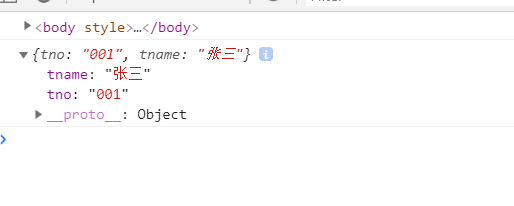

原文连接:https://www.cnblogs.com/kexing/p/11615562.html
SpringMVC框架是基于Spring框架，可以让我们更为方便的进行Web的开发，实现前后端分离
思路和原理
我们之前仿照SpringMVC定义了一个自定义MVC框架，两者的思路其实都是一样的。
建议结合两篇文章进行学习
首先，提供一个前置拦截器（DispatchServlet)，拦截url请求，之后，根据url请求，跳转到Controller层，执行操作，之后再返回数据
入门
我的demo是使用了maven框架
1.创建maven项目
按照下图进行配置

2.添加依赖
修改pom.xml，添加依赖
刚开始的时候，使用的是最新版本（5.x.x)，然后发现有个奇怪的错误，折腾了许久找不到方法，于是便用了4.x.x版本的，果然没有出现问题了，果然是新版本都不好用。。
<dependency>
<groupId>junit</groupId>
<artifactId>junit</artifactId>
<version>4.11</version>
<scope>test</scope>
</dependency>
<!--日志-->
<dependency>
<groupId>commons-logging</groupId>
<artifactId>commons-logging</artifactId>
<version>RELEASE</version>
</dependency>
<dependency>
<groupId>org.springframework</groupId>
<artifactId>spring-context</artifactId>
<version>4.3.9.release</version>
</dependency>
<dependency>
<groupId>org.springframework</groupId>
<artifactId>spring-context-support</artifactId>
<version>4.3.9.release</version>
</dependency>
<dependency>
<groupId>org.springframework</groupId>
<artifactId>spring-test</artifactId>
<version>4.3.9.release</version>
</dependency>
<dependency>
<groupId>org.springframework</groupId>
<artifactId>spring-core</artifactId>
<version>4.3.9.release</version>
</dependency>
<dependency>
<groupId>org.springframework</groupId>
<artifactId>spring-beans</artifactId>
<version>4.3.9.release</version>
</dependency>
<dependency>
<groupId>org.springframework</groupId>
<artifactId>spring-expression</artifactId>
<version>4.3.9.release</version>
</dependency>
<dependency>
<groupId>org.springframework</groupId>
<artifactId>spring-web</artifactId>
<version>4.3.9.release</version>
</dependency>
<dependency>
<groupId>org.springframework</groupId>
<artifactId>spring-webmvc</artifactId>
<version>4.3.9.release</version>
</dependency>
<!--AOP-->
<dependency>
<groupId>org.springframework</groupId>
<artifactId>spring-aop</artifactId>
<version>4.3.9.release</version>
</dependency>
<dependency>
<groupId>org.aspectj</groupId>
<artifactId>aspectjweaver</artifactId>
<version>RELEASE</version>
</dependency>
<dependency>
<groupId>aopalliance</groupId>
<artifactId>aopalliance</artifactId>
<version>RELEASE</version>
</dependency>
<!-- springmvc依赖的json库（如果使用@responsebody注解返回json数据） -->
<dependency>
<groupId>com.fasterxml.jackson.core</groupId>
<artifactId>jackson-core</artifactId>
<version>2.7.3</version>
</dependency>
<dependency>
<groupId>com.fasterxml.jackson.core</groupId>
<artifactId>jackson-databind</artifactId>
<version>2.7.3</version>
</dependency>
<dependency>
<groupId>org.apache.commons</groupId>
<artifactId>commons-lang3</artifactId>
<version>3.3.2</version>
</dependency>
<dependency>
<groupId>javax.servlet</groupId>
<artifactId>javax.servlet-api</artifactId>
<version>4.0.1</version>
</dependency>
<!-- jstl 1.2.5 version libarary -->
<dependency>
<groupId>org.apache.taglibs</groupId>
<artifactId>taglibs-standard-spec</artifactId>
<version>1.2.5</version>
</dependency>
<dependency>
<groupId>org.apache.taglibs</groupId>
<artifactId>taglibs-standard-impl</artifactId>
<version>1.2.5</version>
</dependency>
<!-- oracle driver -->
<dependency>
<groupId>com.github.noraui</groupId>
<artifactId>ojdbc8</artifactId>
<version>12.2.0.1</version>
</dependency>
<!-- mybatis orm框架 -->
<dependency>
<groupId>org.mybatis</groupId>
<artifactId>mybatis</artifactId>
<version>3.5.2</version>
</dependency>
<!-- spring整合mybatis -->
<dependency>
<groupId>org.mybatis</groupId>
<artifactId>mybatis-spring</artifactId>
<version>2.0.2</version>
</dependency>
<!-- 文件上传与下载 -->
<!--
<dependency>
<groupId>commons-fileupload</groupId>
<artifactId>commons-fileupload</artifactId>
<version>1.3.1</version>
</dependency>
-->3.项目结构优化
由于是根据maven模板新建的项目，所以项目结构还需要添加一些文件夹
在main文件夹下新建java文件夹
把java文件夹设置为source directory
在java文件夹下新建自己的包名，然后新建一个controller文件夹和model文件夹，顺便也新建一个resources的文件夹，和上面同样的步骤，设置为resources directory
除此之外，还需要在webapp文件夹下新建一个views文件夹
4.设置Tomcat配置
我这里是设置好了，没有设置的话，是没有下拉菜单的，但是有个add configuration的选项
选择tomcat的设置，选择local，如果没有Tomcat的选项，可以点击选项最下面的show more
点击之后，添加构造物
选择那个exploded的选项
设置url
之后开始运行Web程序，就可以通过访问http://localhost:8080/springmvcdemo来访问Web项目的首页
5.新建springmvc配置文件
springmvc配置文件和之前的spring文件一样，都是进行相关的bean的配置，这里由于是资源文件，所以按照规则我们放入resources文件夹中
springmvc-config.xml
<?xml version="1.0" encoding="UTF-8"?>
<beans xmlns="http://www.springframework.org/schema/beans"
xmlns:p="http://www.springframework.org/schema/p"
xmlns:context="http://www.springframework.org/schema/context"
xmlns:mvc="http://www.springframework.org/schema/mvc"
xmlns:xsi="http://www.w3.org/2001/XMLSchema-instance"
xsi:schemaLocation="http://www.springframework.org/schema/beans http://www.springframework.org/schema/beans/spring-beans.xsd
http://www.springframework.org/schema/context http://www.springframework.org/schema/context/spring-context.xsd
http://www.springframework.org/schema/mvc http://www.springframework.org/schema/mvc/spring-mvc.xsd">
<!-- 对web包中的所有类进行扫描，以完成Bean创建和自动依赖注入的功能-->
<!-- 把标记了controller和requestmapping注解的类和方法进行保存，之后通过反射调用 -->
<context:component-scan base-package="com.wan.controller"/>
<!--支持spring3.0+ 新的mvc注解,不加有些注解功能不行，如json转换的@ResponseBody
<context:annotation-config/>
将隐式地向 Spring 容器注册
1. AutowiredAnnotationBeanPostProcessor 解决数据或组件自动装配
2. CommonAnnotationBeanPostProcessor 解决兼容JSR250规范的注解：@Resource,@PostConstruct,...
3. PersistenceAnnotationBeanPostProcessor 解决持久化注解处理
4. RequiredAnnotationBeanPostProcessor
这 4 个 BeanPostProcessor。
enable-matrix-variables="true": 开启矩阵变量获取数据的特性
-->
<mvc:annotation-driven enable-matrix-variables="true">
<mvc:async-support default-timeout="10"/><!--子元素可指定异步拦截器-->
</mvc:annotation-driven>
<!-- 配置*.js,*.css,*.jpg,*.html等的请不由DispatcherServlet处理，而直接交tomcat服务的默认Servlet来处理，
不同的服务器其默认Servlet的名字是不同，但tomcat默认Servlet的名字叫“default”
-->
<mvc:default-servlet-handler/>
<!--对模型视图名称的解析，即在模型视图名称添加前后缀
UserController.login(){
return "success"; //spring mvc 解析为一个对应的jsp（视图）/views/success.jsp
}
-->
<bean class="org.springframework.web.servlet.view.InternalResourceViewResolver"
p:prefix="/views/" p:suffix=".jsp">
<!-- /views/[login].jsp -->
<!-- 与p:prefix, p:suffix 等价
<property name="prefix" value="/views/" />
<property name="suffix" value=".jsp" />
-->
<!-- 如果使用jstl的话，配置下面的属性 -->
<property name="viewClass" value="org.springframework.web.servlet.view.JstlView" />
</bean>
</beans>配置中有个bean类，是配置视图解析器（也就是最后的那个bean标签），我们使用的是InternalResourceViewResolver
此解析器会把请求处理类（controller类）处理方法的返回值按照“前缀+方法返回值+后缀”的格式进行加工，并把加工后的返回值作为路径进行跳转
除此之外，还有其他的解析器，下面会进行补充说明
6.配置web.xml文件
由于我们使用的maven的模板创建的web项目，web.xml里面的内容并不是我们所需要的，所以还得进行内容的更改
<?xml version="1.0" encoding="UTF-8"?>
<web-app xmlns="http://xmlns.jcp.org/xml/ns/javaee"
xmlns:xsi="http://www.w3.org/2001/XMLSchema-instance"
xsi:schemaLocation="http://xmlns.jcp.org/xml/ns/javaee http://xmlns.jcp.org/xml/ns/javaee/web-app_4_0.xsd"
version="4.0">
<display-name>SpringMVC Demo</display-name>
<!-- springmvc 核心控制器，将springMVC整合到项目里-->
<servlet>
<servlet-name>springmvc-DispatcherServlet</servlet-name>
<servlet-class>org.springframework.web.servlet.DispatcherServlet</servlet-class>
<init-param>
<param-name>contextConfigLocation</param-name>
<!-- 配置spring mvc的组件：扫描controller, view resovle -->
<param-value>classpath:springmvc-config.xml</param-value>
</init-param>
<!-- 服务器启动时加载顺序 -->
<load-on-startup>1</load-on-startup>
<!-- 异步请求处理支持 -->
<async-supported>true</async-supported>
</servlet>
<servlet-mapping>
<servlet-name>springmvc-DispatcherServlet</servlet-name>
<url-pattern>/</url-pattern>
</servlet-mapping>
</web-app>7.测试
我们用一个简单的例子去了解springmvc的使用方式
我们编写一个controller类，用来模拟实现登录操作，登录成功，跳转到登录成功的页面success.jsp
UserController.java
package com.wan.controller;
import org.springframework.stereotype.Controller;
import org.springframework.web.bind.annotation.RequestMapping;
/**
* @author StarsOne
* @date Create in 2019/9/28 0028 14:27
* @description
*/
@Controller
public class UserController {
@RequestMapping("/user/login")
public String login() {
//这里的返回，之后会加上前缀和后缀
//相当于页面跳转到 views/success.jsp 页面
return "success";
}
}
success.jsp中，只有一个简单的“登录成功”文字
index.jsp中，有个链接，请求url为user/login
<a href="user/login">登录</a>之后就是可以跳转到了页面
PS：上面方法返回了一个success,，会被自动加入前缀和后缀，注意，这里是进行的请求转发
除此之外，我们还可以加上forward或redirect前缀来进行请求转发或重定向
但是，如果使用这两种前缀，之后视图解析器就不会自动添加前缀和后缀了。所以，我们得指定具体跳转的url地址。
@RequestMapping("/user/login")
public String login() {
//请求转发
return "forward:/views/success.jsp";
}
@RequestMapping("/user/login")
public String login() {
//重定向
return "redirect:/views/success.jsp";
}RequestMapping注解
高级使用
springmvc框架中的RequestMapping注解不像我们之前自定义MVC框架的注解那样简单，它的还可以标注一个类
例如：
package com.wan.controller;
import org.springframework.stereotype.Controller;
import org.springframework.web.bind.annotation.RequestMapping;
/**
* @author StarsOne
* @date Create in 2019/9/28 0028 14:27
* @description
*/
@Controller
@RequestMapping("/user")
public class UserController {
@RequestMapping("/login")
public String login() {
//这里的返回，相当于页面跳转到 views/success.jsp 页面
return "success";
}
}我们链接上的url请求就是/user/login，而不能使用login
属性说明及使用
| 属性 | 说明 |
|---|---|
| value | 指定请求的实际url地址，是默认属性，如@RequestMapping("/login") 相当于@RequestMapping（value="/login" |
| method | 指定请求的方法，post或get |
| params | 规定请求中的参数必须满足一定的条件 |
| header | 规定请求中的请求头（header）必须满足一定的条件 |
1.method
package com.wan.controller;
import org.springframework.stereotype.Controller;
import org.springframework.web.bind.annotation.RequestMapping;
/**
* @author StarsOne
* @date Create in 2019/9/28 0028 14:27
* @description
*/
@Controller
@RequestMapping("/user")
public class UserController {
@RequestMapping("/login",method="RequestMethod.POST")
public String login() {
//这里的返回，相当于页面跳转到 views/success.jsp 页面
return "success";
}
}之后如果请求不是post方式，就会出现405错误
2.params
使用此属性可以对请求的参数进行约束
例子：
package com.wan.controller;
import org.springframework.stereotype.Controller;
import org.springframework.web.bind.annotation.RequestMapping;
/**
* @author StarsOne
* @date Create in 2019/9/28 0028 14:27
* @description
*/
@Controller
@RequestMapping("/user")
public class UserController {
@RequestMapping("/login",params={"name","age!=23"})
public String login() {
//这里的返回，相当于页面跳转到 views/success.jsp 页面
return "success";
}
}上面的例子约束的url的请求参数必须要包含有name和age，且age不能等于23，如果不满足条件，就会发生404错误
如：
<!-- 满足条件的url请求 -->
<a href="user/login?name=zhang&age=21">登录</a>params中可以接收以下表达式
| 表达式 | 说明 |
|---|---|
| paramName | url请求必须包含paramName此参数名 |
| !paramName | url请求不能包含paramName此参数名 |
| paramName!=xx | url请求必须包含paramName此参数名，且此参数数值不等于xx |
header比较少用，这里就不补充了
获得请求url参数值
获得url请求的参数值，我们可以使用RequestParam注解
使用此注解，可以把url请求参数的数值赋值给方法参数
下面是@RequestParam注解的常用属性说明
| 属性 | 说明 |
|---|---|
| value | 请求携带参数的参数名 |
| required | 标识请求url参数是必须存在某个具体的参数，true(默认)：必须存在，不存在则会发生异常；false:不存在 |
| defaultValue | 给方法参数赋一个默认值，如果请求url不存在此参数，则使用默认值 |
package com.wan.controller;
import org.springframework.stereotype.Controller;
import org.springframework.web.bind.annotation.RequestMapping;
/**
* @author StarsOne
* @date Create in 2019/9/28 0028 14:27
* @description
*/
@Controller
@RequestMapping("/user")
public class UserController {
@RequestMapping("/login")
public String login(@RequestParam(value="username") String name) {
//这里的返回，相当于页面跳转到 views/success.jsp 页面
return "success";
}
}请求url为user/login?username=zhang，之后便会把此请求参数赋值给方法参数name
和我们自定义mvc框架一样，springmvc框架中，我们也可以直接使用实体类、session、request、response作为方法的参数
@RequestMapping("/user/login")
public login(Student student){
...
}
@RequestMapping("/user/login")
public login(HttpServletRequest request,HttpServletResponse response,HttpSession session){
...
}与RequestParam类似的还有这两个RequestHeader和CookieValue
这两个注解我现在没怎么用到，暂时了解一下，不作补充
- RequestHeader注解，主要是用来获得请求头的数据
- CookieValee注解，主要是用来获得一个cookieValue
返回json数据
我们使用@ResponseBody，方法返回实体类或者集合的时候，springmvc就会自动帮我们转为json数据
使用之前需要导入这两个jar，jackson-core.jar和jackson-databind.jar，之前的依赖已经包含下面这两个jar了
<dependency>
<groupId>com.fasterxml.jackson.core</groupId>
<artifactId>jackson-core</artifactId>
<version>2.7.3</version>
</dependency>
<dependency>
<groupId>com.fasterxml.jackson.core</groupId>
<artifactId>jackson-databind</artifactId>
<version>2.7.3</version>
</dependency>UserController.java
package com.wan.controller;
import com.wan.model.Teacher;
import org.springframework.stereotype.Controller;
import org.springframework.web.bind.annotation.RequestMapping;
import org.springframework.web.bind.annotation.ResponseBody;
/**
* @author StarsOne
* @date Create in 2019/9/28 0028 14:27
* @description
*/
@Controller
@RequestMapping("/user")
public class UserController {
@ResponseBody
@RequestMapping("/login")
public Teacher login() {
return new Teacher("001", "张三");
}
}之后在jsp页面中使用ajax异步请求
<%@ page contentType="text/html;charset=UTF-8" language="java" %>
<meta http-equiv="Content-Type" content="text/html;charset=UTF-8"/>
<html>
<head>
<script src="https://code.jquery.com/jquery-3.1.1.min.js"></script>
<script type='text/javascript'>
function getData() {
$.getJSON("user/login", function(json){
console.log(json);
});
}
</script>
</head>
<body>
<button onclick="getData()">登录</button>
</body>
</html>就可以在控制台看到打印出来的json数据

处理Model数据
SpringMVC中，M其实就是代表着Model（模型），也就是相当于数据
假设我们要从数据查询数据：先从页面（View）发送url请求，然后控制器（Controller)通过Service/Dao从数据库中获得了数据（Model)，并把数据进行处理，使得数据能够传回页面（View）并显示。
如果是异步请求的话，我们可以返回一个json数据到页面，如果不是的话，我们就得把数据存放在request或session的作用域里，之后由页面（View）从作用域中取出数据并显示
SpringMVC提供了四种方法来处理那些需要从作用域中取出数据显示的视图
- ModelAndView
- Map、ModelMap和Model
- @SessionAttributes
- @ModelAttribute
1.ModelAndView
此类一般用来作方法的返回值来实现返回一个带数据的页面（View）
UserController.java
package com.wan.controller;
import org.springframework.stereotype.Controller;
import org.springframework.web.bind.annotation.RequestMapping;
/**
* @author StarsOne
* @date Create in 2019/9/28 0028 14:27
* @description
*/
@Controller
@RequestMapping("/user")
public class UserController {
@RequestMapping("/login")
public ModelAndView login() {
String view = "success";
ModelAndView mav = new ModelAndView(view);
Teacher teacher = new Teacher("001","张三");
//相当于request.addAttribute("teacher",teacher)
mav.addObject("teacher",teacher);
return mav;
}
}success.jsp中取出数据并显示
<body>
${requestScope.student.tno}
</body>上面的例子和之前一样，还是会加上前缀和后缀，得到views/success.jsp
2.Map、ModelMap和Model
Map、ModelMap和Model一般使用作为方法的参数，之后，通过put方法往里面存入数据
package com.wan.controller;
import org.springframework.stereotype.Controller;
import org.springframework.web.bind.annotation.RequestMapping;
/**
* @author StarsOne
* @date Create in 2019/9/28 0028 14:27
* @description
*/
@Controller
@RequestMapping("/user")
public class UserController {
@RequestMapping("/login")
public String login(Map<String,Object> map) {
String view = "success";
Teacher teacher = new Teacher("001","张三");
//相当于request.addAttribute("teacher",teacher)
map.put("teacher",teacher);
return "success";
}
}ModelMap和Map的使用方法一样
还可以使用Model
@RequestMapping("/login")
public String login(Model model) {
String view = "success";
Teacher teacher = new Teacher("001","张三");
//相当于request.addAttribute("teacher",teacher)
model.addAttribute("teacher",teacher);
return "success";
}Model类还可以使用添加一个map数据，addAllAttribute(Map<String,?> map)
3.@SessionAttributes
前面的两个方法，都是放入到request的作用域里，如果我们想放入session作用域，可以使用@SessionAttributes注解，一般标注在类上
@SessionAttributes可以将指定的对象加入到session范围，也可以将某个类型的对象加入到session中
下面的例子，指定了key为teacher的对象，添加到了session作用域
package com.wan.controller;
import org.springframework.stereotype.Controller;
import org.springframework.web.bind.annotation.RequestMapping;
/**
* @author StarsOne
* @date Create in 2019/9/28 0028 14:27
* @description
*/
@Controller
@RequestMapping("/user")
@SessionAttributes(value="teacher")
public class UserController {
@RequestMapping("/login")
public String login(Map<String,Object> map) {
String view = "success";
Teacher teacher = new Teacher("001","张三");
//在添加到request作用域，同时也添加了session作用域
map.put("teacher",teacher);
return "success";
}
}把Teacher类型的对象添加到session作用域中
package com.wan.controller;
import org.springframework.stereotype.Controller;
import org.springframework.web.bind.annotation.RequestMapping;
/**
* @author StarsOne
* @date Create in 2019/9/28 0028 14:27
* @description
*/
@Controller
@RequestMapping("/user")
@SessionAttributes(type=Teacher.class)
public class UserController {
@RequestMapping("/login")
public String login(Map<String,Object> map) {
String view = "success";
Teacher teacher = new Teacher("001","张三");
//在添加到request作用域，同时也添加了session作用域
map.put("teacher",teacher);
return "success";
}
}4.@ModelAttribute
使用情况：
我们需要对数据进行更新，但我们只能更新数据的某个属性。
我们点击编辑之后，只有一个输入框让我们输入，用来更改那个属性，我们输入更改后的属性值，更新的时候会发现，controller里面的数据，传入的对象除了更改的那个属性值，其他的属性值都是为null，我们不希望这种情况，所以，使用此注解
此注解用来修饰controller里的某个方法，然后就会在执行controller中@RequestMapping的方法之前执行，把传入的对象中的数据更新，之后执行修改操作的话，只会把对象需要修改的属性值更改，其他的属性值不变（不为null了）
我个人觉得这样好像比较麻烦，上面的情况有个更好的解决办法，就是不要使用唯一的输入框，而是使用多个输入框，把不能更改的那几项输入框设置disable，之后提交表单也能成功传入其他的属性值
视图解析器
工作流程
springmvc框架中，请求处理方法（Controller中的方法）执行完成后，最终返回一个ModelAndView 对象。
Spring MVC 借助视图解析器（ViewResolver）得到最终的视图对象（View），最终的视图可以是JSP ，也可能是Excel、JFreeChart 等各种表现形式的视图
对于最终究竟采取何种视图对象对模型数据进行渲染（也就是我们常说的把数据从request等作用域取出来显示到页面上），处理器并不关心，处理器工作重点聚焦在生产模型数据的工作上，从而实现MVC 的充分解耦
对于那些返回String，View 或ModeMap 等类型的处理方法，Spring MVC 也会在内部将它们装配成一个ModelAndView 对象，它包含了逻辑名和模型对象的视图；
如下图：
View
springmvc中的View其实是个接口，下面是常见的View接口的实现类
| 视图类型 | 实现类 | 说明 |
|---|---|---|
| URL视图类型 | InternalResourceView | 将JSP或其他资源封装成一个视图。被视图解析器InternalResourceViewResolver默认使用。 |
| URL视图类型 | JstlView | InternalResourceView的子类。如果JSP中使用了JSTL的国际化标签，就需要使用该视图类 |
| 文档视图 | AbstractExcelView | Excel文档视图的抽象类 |
| 文档视图 | AbstractPdfView | PDF文档视图的抽象类 |
| 报表视图 | ConfigurableJasperReportsView | |
| 报表视图 | JasperReportsHtmlView | |
| 报表视图 | JasperReportsPdfView | |
| 报表视图 | JasperReportsXlsView | |
| JSON视图 | MappingJackson2JsonView | 将数据通过Jackson框架的ObjectMapper对象，以JSON方式输出 |
ViewResolver以及子类
ViewResolver和View一样，也是个接口
| 视图解析器类型 | 类名 | 说明 |
|---|---|---|
| 解析为映射文件 | UrlBasedViewResolver | 它简单实现了ViewResolver接口, 不用任何映射就能通过逻辑视图名称访问资源 |
| 解析为映射文件 | InternalResourceViewResolver | 将逻辑视图名解析为一个路径 |
| 解析为bean | BeanNameViewResolver | 将逻辑视图名解析为bean的name属性，从而根据name属性去找对应的bean |
| 解析为bean | ResourceBundleResolver | 和BeanNameViewResolver一样，只不过定义的view-bean都在一个properties文件中，用这个类进行加载这个properties文件 |
| 解析为bean | XmlViewResolver | 和ResourceBundleResolver一样，只不过定义的view-bean在一个xml文件中，用这个类来加载xml文件 |
| 解析为模版文件 | VelocityViewResolver | 对Velocity模版引擎的支持 |
| 解析为模版文件 | FreeMarkerViewResolver | 对FreeMarker模版引擎的支持 |
这里，我只介绍以下前两种，也就是我们用过的类型。更多请参考我们下面给出的链接
AbstractCachingViewResolver，这个类为抽象类，实现了ViewResolver接口，抽象类只能被继承，无法创建实例。
UrlBasedViewResolver就是继承于AbstractCachingViewResolver这个类，从而扩展了功能。
AbstractCachingViewResolver介绍：
这种视图解析器会把它曾经解析过的视图保存起来，然后每次要解析视图的时候先从缓存里面找。
如果找到了对应的视图就直接返回，如果没有就创建一个新的视图对象，然后把它放到一个用于缓存的map中，接着再把新建的视图返回。
使用这种视图缓存的方式可以把解析视图的性能问题降到最低。
UrlBasedViewResolver介绍：
继承了AbstractCachingViewResolver，主要就是提供的一种拼接URL的方式来解析视图，它可以让我们通过prefix属性指定一个指定的前缀，通过suffix属性指定一个指定的后缀，然后把返回的逻辑视图名称加上指定的前缀和后缀就是指定的视图URL了。
InternalResourceViewResolver介绍：
这个类是继承于UrlBasedViewResolver，UrlBasedViewResolver具有的功能它都有，而且还有它自己的特性。从字面翻译，InternalResourceViewResolver就是内部资源解析器。
InternalResourceViewResolver会把返回的视图名称都解析为InternalResourceView对象，InternalResourceView会把Controller处理器方法返回的模型属性都存放到对应的request属性中，然后通过RequestDispatcher在服务器端把请求forword重定向到目标URL。
参考链接：Spring MVC-从零开始-view-ViewResolver
静态资源访问
情景
如果我们想要通过一个url去访问我们项目中的一个图片、js文件、视频等静态资源，会发现报404错误
原因是我们定义一个前置Servlet，处理了所有的url请求，但是，由于未能找到RequestMapping注解上的相匹配的url，所以就会出现404错误
解决方法
在springmvc配置文件中添<mvc:default-servlet-handler/>和<mvc:annotation-driven></mvc:annotation-driven>即可解决问题
之前给出的springmvc配置文件中，其实已经添加了这两个标签，在这里稍微介绍一下作用
<mvc:default-servlet-handler/>作用：在SpringMVC上下文中，定义了一个DefaultServletHttpRequestHandler，它会对鄋DispatcherServlet处理的请求进行检查，如果发现某个请求没有对应的@RequestMapping进行处理，就会将该请求交个Web服务器默认的Servlet进行处理，二默认的Servlet就会直接根据url去访问该资源
<mvc:annotation-driven></mvc:annotation-driven>作用：访问静态资源的同时，眼能够正常的访问其他非静态资源
两个标签都要添加
中文乱码方法（补充）
1. 设置页面编码
<%@ page contentType="text/html;charset=UTF-8" language="java" %>
<meta http-equiv="Content-Type" content="text/html;charset=UTF-8"/>2.配置过滤器
在web.xml中配置
<?xml version="1.0" encoding="UTF-8"?>
<web-app xmlns="http://xmlns.jcp.org/xml/ns/javaee"
xmlns:xsi="http://www.w3.org/2001/XMLSchema-instance"
xsi:schemaLocation="http://xmlns.jcp.org/xml/ns/javaee http://xmlns.jcp.org/xml/ns/javaee/web-app_4_0.xsd"
version="4.0">
<display-name>SpringMVC Demo</display-name>
<!-- 中文转码必须加到核心控制器前面 -->
<filter>
<filter-name>characterEncodingFilter</filter-name>
<filter-class>org.springframework.web.filter.CharacterEncodingFilter</filter-class>
<init-param>
<param-name>encoding</param-name>
<param-value>UTF-8</param-value>
</init-param>
<init-param>
<param-name>forceEncoding</param-name>
<param-value>true</param-value>
</init-param>
</filter>
<filter-mapping>
<filter-name>characterEncodingFilter</filter-name>
<url-pattern>/</url-pattern>
</filter-mapping>
<!-- springmvc 核心控制器，将springMVC整合到项目里-->
<servlet>
<servlet-name>springmvc-DispatcherServlet</servlet-name>
<servlet-class>org.springframework.web.servlet.DispatcherServlet</servlet-class>
<init-param>
<param-name>contextConfigLocation</param-name>
<!-- 配置spring mvc的组件：扫描controller, view resovle -->
<param-value>classpath:springmvc-config.xml</param-value>
</init-param>
<!-- 服务器启动时加载顺序 -->
<load-on-startup>1</load-on-startup>
<!-- 异步请求处理支持 -->
<async-supported>true</async-supported>
</servlet>
<servlet-mapping>
<servlet-name>springmvc-DispatcherServlet</servlet-name>
<url-pattern>/</url-pattern>
</servlet-mapping>
</web-app>更多方法，请查看参考链接